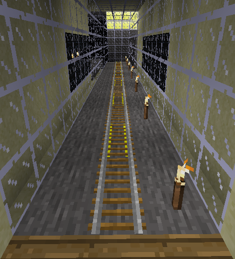

Put rail and powered rail along centre of your tunnel. Where the tunnel is sloping, place stairs down the left side.
Where the tunnel is flat we don't need so much power rail. Use two pieces of rail followed by two pieces of power rail, and keep alternating two at a time.
Stairs need a direction as well as a type. The type is "stairs:stair_stonebrick". The direction is stored in a second parameter called param2. To use a second parameter we use JSON (JavaScript Object Notation). The JSON string for stonebrick stairs sloping upward to positive z is
'{"name":"stairs:stair_stonebrick","param2":"0"}'
The different values of param2 are
The first image shows the stairs and rail on the sloping section of the tunnel.

The second image shows the flat part of the tunnel with rail and power rail each in pairs
The 'Check Task' button above relies on minetest to evaluate this task. You may have to press it again when your program has finished to ensure minetest has had time to evaluate it.